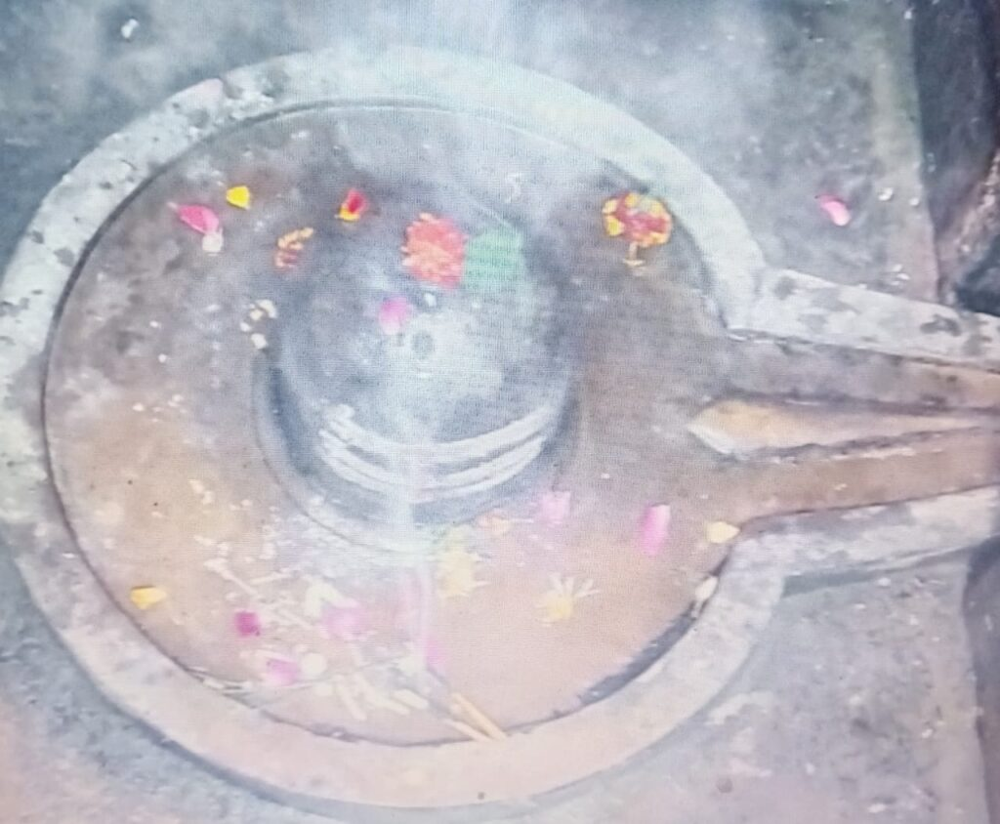
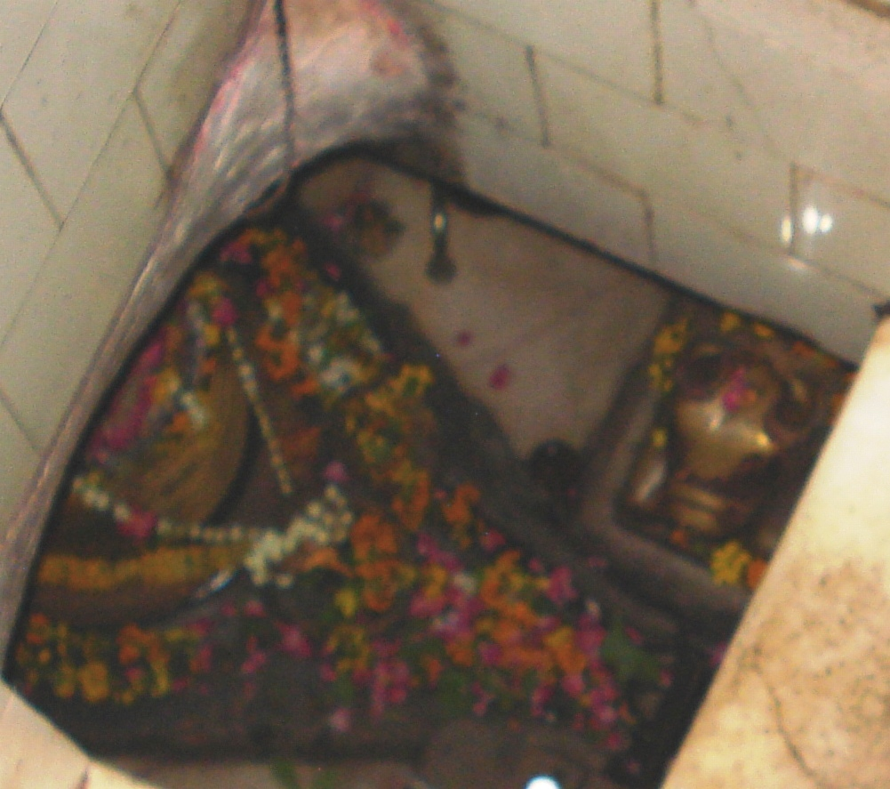
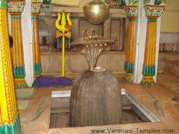
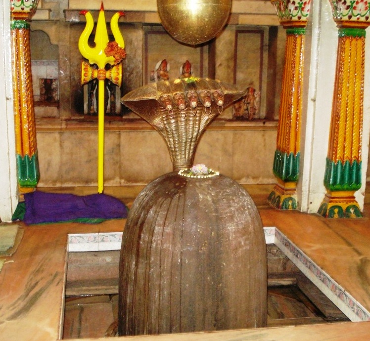

<?xml version="1.0" encoding="UTF-8"?><rss version="2.0"
	xmlns:content="http://purl.org/rss/1.0/modules/content/"
	xmlns:wfw="http://wellformedweb.org/CommentAPI/"
	xmlns:dc="http://purl.org/dc/elements/1.1/"
	xmlns:atom="http://www.w3.org/2005/Atom"
	xmlns:sy="http://purl.org/rss/1.0/modules/syndication/"
	xmlns:slash="http://purl.org/rss/1.0/modules/slash/"
	>

<channel>
	<title>Shiva Temples &#8211; Varanasi Temples</title>
	<atom:link href="index.html" rel="self" type="application/rss+xml" />
	<link>../../../index.html</link>
	<description>Temples of Varanasi as referred to in Kashi Khand</description>
	<lastBuildDate>Thu, 19 Jun 2025 05:16:46 +0000</lastBuildDate>
	<language>en-US</language>
	<sy:updatePeriod>hourly</sy:updatePeriod>
	<sy:updateFrequency>1</sy:updateFrequency>
	<generator>https://wordpress.org/?v=4.6.29</generator>
	<item>
		<title>JARASANDHESHWAR</title>
		<link>../../../shiva-temples/other-shiva-temples-e-k/jarasandheshwar/index.html</link>
		<pubDate>Mon, 23 Jan 2023 06:53:05 +0000</pubDate>
		<dc:creator><![CDATA[admin]]></dc:creator>
				<category><![CDATA[Other Shiva Temples (E-K)]]></category>

		<guid isPermaLink="false">../../../index.html</guid>
		<description><![CDATA[According to Chapter 97 of Kashi Khand, in the vicinity of Vishalakshy is the Jarasandheshwar Ling. By worshipping this Ling, the devotee may be cured of any illness. This Ling has been described as Jwara Nashak (Fever eradicator). In ancient times there was not much medical advancement and people used to worship various deities for [&#8230;]]]></description>
				<content:encoded><![CDATA[<h4 style="margin-left: 34.4pt;"></h4>
<p>According to Chapter 97 of Kashi Khand, in the vicinity of Vishalakshy is the Jarasandheshwar Ling. By worshipping this Ling, the devotee may be cured of any illness. This Ling has been described as Jwara Nashak (Fever eradicator).</p>
<p>In ancient times there was not much medical advancement and people used to worship various deities for being cured of any disease. Nowadays</p>
<p>lot of pathological and diagnostic tests are available to determine the exact type of ailment. Our enquiries reveal that even now devout people worship this deity for riddance from fevers etc.</p>
<p></p>
<p>&nbsp;</p>
<p style="text-align: center;"><strong>(JARASANDHESHWAR)</strong></p>
<p><u>LOCATION OF JARASANDHESHWAR</u></p>
<p>Jarasandheshwar is located at D-3/71, Mir Ghat, Bare Hanuman Temple. Devotees can travel upto Dasaswamedh Vishwanath Gully by rickshaw and walk on foot to this place through Vishalakshi Gauri Temple, which is a famous landmark. Alternatively they can travel by boat upto Mir Ghat and walk up the steps and reach the place.</p>
<p><u>TYPES OF POOJA</u></p>
<p>&nbsp;</p>
<p>The temple is open from 07.00 a.m. to 01.00 p.m. and from 04.00 p.m. to</p>
<p>09.00 p.m. Aarties are held in the morning and evening.</p>
<p>&nbsp;</p>
<p><u>POOJARIES OF THE TEMPLE</u></p>
<p>&nbsp;</p>
<p>Shri Rajeshwar Prasad is the poojari of the temple.</p>
]]></content:encoded>
			</item>
		<item>
		<title>TRILOCHANESHWAR</title>
		<link>../../../shiva-temples/trilochaneshwar/index.html</link>
		<pubDate>Tue, 11 May 2010 07:45:45 +0000</pubDate>
		<dc:creator><![CDATA[admin]]></dc:creator>
				<category><![CDATA[Other Shiva Temples (S-Y)]]></category>
		<category><![CDATA[Shiva Temples]]></category>
		<category><![CDATA[Trilochan]]></category>
		<category><![CDATA[ancestors]]></category>
		<category><![CDATA[ashtami]]></category>
		<category><![CDATA[omkareshwar]]></category>
		<category><![CDATA[tri]]></category>
		<category><![CDATA[tril]]></category>
		<category><![CDATA[trilo]]></category>
		<category><![CDATA[trilochan]]></category>
		<category><![CDATA[trilochaneshwar]]></category>

		<guid isPermaLink="false">../../../p=518.html</guid>
		<description><![CDATA[Trilochan Ling finds mention in Kashi Khand as Trivishtabh Ling.  In the south of Trilochan, three holy rivers Yamuna, Saraswati and Narmada joined together once. It is believed that these three rivers themselves performed abhishek of Trilochan Ling (Kashi Khand, Chapter 75). While Omkareshwar Ling attained prime importance among all Lings in Kashi, the importance [&#8230;]]]></description>
				<content:encoded><![CDATA[<p>Trilochan Ling finds mention in Kashi Khand as Trivishtabh Ling.  In the south of Trilochan, three holy rivers Yamuna, Saraswati and Narmada joined together once. It is believed that these three rivers themselves performed abhishek of Trilochan Ling (Kashi Khand, Chapter 75).</p>
<p>While Omkareshwar Ling attained prime importance among all Lings in Kashi, the importance of darshan of Trilochan Ling is given more prominence.  Trilochan is a Swayambhu Ling and  it is stated in Kashi Khand that the Ling came to the earth from seven Patal Lokas, piercing each and every layer.</p>
<p>Let alone having darshan, even uttering the word of Trilochan by mouth will cleanse the devotee of his sins.  A person knowingly or unknowingly committing sins in any place, finds mukti in Kashi and a person committing a similar sin in Kashi finds mukti by eulogizing (praising) Trilochan Ling. (Kashi Khand, ibid).</p>
<p></p>
<p style="text-align: center;"><strong>(TRILOCHANESHWAR)</strong></p>
<p>The three rivers mentioned above join together in a Teerth called Pilpila Teerth.  It is believed that taking a bath in Pilpila Teerth and having darshan of Trilochan is considered very auspicious.</p>
<p>&nbsp;</p>
<p><strong>&#8212;&#8212;&#8212;&#8212;&#8212;&#8212;&#8212;&#8212;&#8212;&#8212;&#8212;&#8212;&#8212;&#8212;&#8212;&#8212;&#8212;&#8212;&#8212;&#8212;&#8212;&#8212;&#8212;&#8212;&#8212;&#8212;&#8212;&#8212;&#8212;&#8212;&#8212;&#8212;&#8212;&#8212;-</strong></p>
<p><strong>Kashi Khand, Chapter 75, Shlok 72</strong></p>
<p><strong>सकृत्त्रिविष्टपं दृष्ट्वा स्नात्वा पैलिपिले हृदे </strong></p>
<p><strong>न जातु मातुस्तनपो जायते जन्तुरत्र हि</strong></p>
<p>&nbsp;</p>
<p><strong>Those devotees who take bath in Pilpila Tirtha and worship Trilochaneshwar will never be breastfed by their mother. (Meaning, they will have no rebirth &#8211; they will attain salvation.)  (Akshay Triteeya day is considered very holy for this purpose and many devotees undertake this ritual).</strong></p>
<p><strong>&#8212;&#8212;&#8212;&#8212;&#8212;&#8212;&#8212;&#8212;&#8212;&#8212;&#8212;&#8212;&#8212;&#8212;&#8212;&#8212;&#8212;&#8212;&#8212;&#8212;&#8212;&#8212;&#8212;&#8212;&#8212;&#8212;&#8212;&#8212;&#8212;&#8212;&#8212;&#8212;&#8212;&#8212;&#8212;</strong></p>
<p>Performing pooja/archana of Trilochan on all Ashtami and Chaturdashi days are auspicious.  In Vaishaka Month (April 20-May 20) Shukla Paksha Tritheeya (third day after Amavasya), also known as Akshay Tritheeya is a very very auspicious day and people who observe vrath (fast) on that day and perform Shraadh Karma (rituals towards their forefathers) attain high level of enlightenment and obtain blessings of their ancestors and Gods.</p>
<p>If all the Shiv Lings in the world are visualised as a human being (personified), Trilochan Ling is the Eye of the Personified structure.  Local pundits believe that Trilochan Ling is the third eye of Vishweshwar Ling.</p>
<p>&nbsp;</p>
<p><strong>&#8212;&#8212;&#8212;&#8212;&#8212;&#8212;&#8212;&#8212;&#8212;&#8212;&#8212;&#8212;&#8212;&#8212;&#8212;&#8212;&#8212;&#8212;&#8212;&#8212;&#8212;&#8212;&#8212;&#8212;&#8212;&#8212;&#8212;&#8212;&#8212;&#8212;&#8212;&#8212;&#8212;&#8212;-</strong></p>
<p><strong>Kashi Khand, Chapter 75,  Shlok 57</strong></p>
<p><strong>क्षमां प्रदक्षिणीकृत्य यत्फलं सम्यगाप्यते</strong></p>
<p><strong>प्रदोषे यत्फलं काश्यां सप्तकृत्वस्त्रिलोचने</strong></p>
<p>&nbsp;</p>
<p><strong>A devotee will derive the fruits of performing parikrama of the entire world by performing seven parikaramas of Trilochan Ling during twilight  time. </strong></p>
<p><strong>&#8212;&#8212;&#8212;&#8212;&#8212;&#8212;&#8212;&#8212;&#8212;&#8212;&#8212;&#8212;&#8212;&#8212;&#8212;&#8212;&#8212;&#8212;&#8212;&#8212;&#8212;&#8212;&#8212;&#8212;&#8212;&#8212;&#8212;&#8212;&#8212;&#8212;&#8212;&#8212;&#8212;&#8212;&#8212;</strong></p>
<p>&nbsp;</p>
<p>In Kashi Khand, besides Pilpila Teerth, there is mention of Padodak Koop (well). This Koop is still existing in the temple premises.  Pilpila Teerth is existing in the form of Pilpila Koop very near to Trilochan temple. While the Padodak well has been kept covered, there is a pump attached to the well, with the help of which water is drawn.</p>
<p>&nbsp;</p>
<p>&nbsp;</p>
<h1></h1>
<h1>LOCATION OF THE TEMPLE</h1>
<p>Trilochaneshwar Temple is located at A-2/80, Trilochan Ghat.  The temple is approachable from Birla Hospital after Machhodari upto which place, devotees can travel by Auto or Cycle Rickshaw. Alternatively, they can have a boat ride upto Trilochan Ghat and climb the steps. This temple also houses Varanasi Devi which finds mention in Kashi Khand, Chapter 33.</p>
<p>&nbsp;</p>
<p><strong>Please watch our YouTube Video about Trilochaneshwar  at following Link</strong></p>
<p>&nbsp;</p>
<p><a href="https://www.youtube.com/watch?v=R2yHgdVtTBk&amp;t=38s">https://www.youtube.com/watch?v=R2yHgdVtTBk&amp;t=38s</a></p>
<p>&nbsp;</p>
<p>&nbsp;</p>
<p><strong><span style="text-decoration: underline;">TYPES OF POOJAS</span></strong></p>
<p>The temple is open for worship 05.30 a.m. to 12.00 noon and 05.00 p.m. to 11 p.m.  Mangala Aarti is performed at 05.30 a.m. and Shayan Aarti at 11.00 p.m.</p>
<p>Taking bath in Padodak Koop on Akshay Tritheeya day and performing pooja of Trilochan is very auspicious and there is heavy rush on the above day even now.</p>
<p>Jal Shringar is done on Akshay Tritheeya Day  in the evening which is very well worshipped by devotees.</p>
<p>For doing special pooja etc., it is advisable to consult the Poojari before hand.</p>
<p>The temple also houses a Shiv Ling known as Saraswateeshwar, which finds mention in Kashi Khand.</p>
<h2></h2>
]]></content:encoded>
			</item>
		<item>
		<title>SAHASRAKSHESHWAR</title>
		<link>../../../shiva-temples/sahasraksheshwar/index.html</link>
		<pubDate>Tue, 11 May 2010 07:40:08 +0000</pubDate>
		<dc:creator><![CDATA[admin]]></dc:creator>
				<category><![CDATA[Other Shiva Temples (S-Y)]]></category>
		<category><![CDATA[Sahasraksheshwar]]></category>
		<category><![CDATA[Shiva Temples]]></category>
		<category><![CDATA[shailputri]]></category>

		<guid isPermaLink="false">../../../p=516.html</guid>
		<description><![CDATA[SAHASRAKSHESHWAR According to Kashi Khand, Chapter 69, the place where Lord Shiva wore the skin of Gajasur after slaying the latter, was called Rudra Vasam. (Kindly refer to Krithi Vaseshwar). Once the Lord, in his form as Krithi Vaseshwar, was sitting alongwith Goddess Uma Devi when Nandi offered his prayers and stated that there are [&#8230;]]]></description>
				<content:encoded><![CDATA[<p><strong><span style="text-decoration: underline;">SAHASRAKSHESHWAR</span></strong></p>
<p>According to Kashi Khand, Chapter 69, the place where Lord Shiva wore the skin of Gajasur after slaying the latter, was called Rudra Vasam. (Kindly refer to Krithi Vaseshwar).</p>
<p>Once the Lord, in his form as Krithi Vaseshwar, was sitting alongwith Goddess Uma Devi when Nandi offered his prayers and stated that there are 68 places of worship dedicated to Lord Shiva in this holy place.  Various idols/Shiv Lings have been brought from several other places by Nandi and installed in Kashi.</p>
<p>From Suvarna Teerth, one Ling by name of Sahasraksheshwar has appeared in the Holy city of Kashi. This Ling is mentioned to be to the south of Shaileshwar. Devotees who worship this Ling will be absolved of their sins committed over the years including those committed in their previous births.  Kashi Khand mentions that sins committed in hundred thousand births will be washed away.</p>
<p></p>
<p style="text-align: center;"><strong>(SAHASRAKSHESHWAR)</strong></p>
<p><strong><span style="text-decoration: underline;">LOCATION OF SAHASRAKSHESHWAR</span></strong></p>
<p>Sahasraksheshwar is located at A-40/11, Marhia Ghat, Shailputri. If one travels from Varanasi Railway station through G.T. Road, just before Varanasi City Station, a small road takes a left turn where he will encounter a level crossing. After crossing the road, he will have to travel for about 2 Kms. to reach this place. People can travel upto this place by rickshaw/auto rickshaw and most of the drivers know the place where Shailputri temple is located.</p>
<p>&nbsp;</p>
<p><strong>Please watch our YouTube Video about Sahasraksheshwar at following Link</strong></p>
<p>&nbsp;</p>
<p><a href="https://www.youtube.com/watch?v=J4j53uVdNwo">https://www.youtube.com/watch?v=J4j53uVdNwo</a></p>
<p>&nbsp;</p>
<p>&nbsp;</p>
<p><strong><span style="text-decoration: underline;">TYPES OF POOJA</span></strong></p>
<p>The temple is open from 5.00 a.m. to 12.00 noon  and from 03.00 p.m. to 10.00 p.m. Aarties are performed in the morning and in the evening.  The timings may vary a little.</p>
<p>&nbsp;</p>
]]></content:encoded>
			</item>
		<item>
		<title>SAMUDRESHWAR</title>
		<link>../../../shiva-temples/samudreshwar/index.html</link>
		<pubDate>Tue, 11 May 2010 07:38:19 +0000</pubDate>
		<dc:creator><![CDATA[admin]]></dc:creator>
				<category><![CDATA[Other Shiva Temples (S-Y)]]></category>
		<category><![CDATA[Samudreshwar]]></category>
		<category><![CDATA[Shiva Temples]]></category>

		<guid isPermaLink="false">../../../p=514.html</guid>
		<description><![CDATA[Goddess Parvaty wanted to know about the various Shiv Lings and deities  located at several places in Kashi and Lord Shiva was pleased to narrate about such deities (Kashi Khand, Chapter 97). In the vicinity of Eeshaneshwar and Langlishwar, Kashi Khand mentions one Samudreshwar Ling. Devotees who worship these Lings will attain Siddhi and Moksha.  [&#8230;]]]></description>
				<content:encoded><![CDATA[<p>Goddess Parvaty wanted to know about the various Shiv Lings and deities  located at several places in Kashi and Lord Shiva was pleased to narrate about such deities (Kashi Khand, Chapter 97).</p>
<p>In the vicinity of Eeshaneshwar and Langlishwar, Kashi Khand mentions one Samudreshwar Ling.</p>
<p>Devotees who worship these Lings will attain Siddhi and Moksha.  They will not be regarded as ordinary mortals by the community.</p>
<h2>LOCATION OF SAMUDRESHWAR</h2>
<p>Samudreshwar is located in the main road at Bansphatak.  When a devotee proceeds from Godowlia to Chowk, just after Bansphatak Vishwanath Gulli, Samudreshwar will be on the right side of the road.  If a devotee is traveling from Chowk to Godowlia, this deity will be on the left side of the road just before Bansphatak Vishwanath Gulli.  Locals refer to this Ling as Ardha Kapari Baba.</p>
<h2>TYPES OF POOJA</h2>
<p>The place of worship is open from 06.00 a.m. to 11.00 a.m and from 05.00 p.m. to 09.00 p.m. The timings are somewhat flexible. Devotees can worship and perform pooja as per their convenience.</p>
]]></content:encoded>
			</item>
		<item>
		<title>SATISHWAR</title>
		<link>../../../shiva-temples/satishwar/index.html</link>
		<pubDate>Tue, 11 May 2010 07:36:24 +0000</pubDate>
		<dc:creator><![CDATA[admin]]></dc:creator>
				<category><![CDATA[Other Shiva Temples (S-Y)]]></category>
		<category><![CDATA[Satishwar]]></category>
		<category><![CDATA[Shiva Temples]]></category>
		<category><![CDATA[mrityunjeshwar]]></category>

		<guid isPermaLink="false">../../../p=512.html</guid>
		<description><![CDATA[Long time back Lord Brahma offered intense prayers to Lord Shiva whereupon the latter appeared before the former and offered a divine wish.  Lord Brahma desired that Lord Shiva should become his son and Goddess Parvaty should become the daughter of Daksh.  Lord Shiva agreed to this. Lord Shiva appeared out of Lord Brahma’s head [&#8230;]]]></description>
				<content:encoded><![CDATA[<p>Long time back Lord Brahma offered intense prayers to Lord Shiva whereupon the latter appeared before the former and offered a divine wish.  Lord Brahma desired that Lord Shiva should become his son and Goddess Parvaty should become the daughter of Daksh.  Lord Shiva agreed to this.</p>
<p>Lord Shiva appeared out of Lord Brahma’s head as a small boy and was named by Lord Brahma as Rudra. Lord Brahma was very happy that he can keep Lord Shiva (though in the form of small boy Rudra) in his house, he can always play with the boy, eat with the boy, sit in the same place and undertake all such activities that a father shares with his son.</p>
<p>While Lord Shiva took the form of a boy named Rudra as mentioned above, Goddess Parvaty became the daughter of Daksh and was known as Sati. When she came of age, in order to get a good husband, she came to Kashi and started worshipping Lord.  One day a Ling appeared before her and from inside came the voice of  Lord Shiva.</p>
<p>Lord Shiva told Sati that her wishes will be fulfilled and there was no further need of any intense prayers. The Ling which appeared before her was called Satishwar and those girls or boys who sincerely worship this Ling will get spouse of their choice.  Besides, those devotees who pray to this Ling with sincere devotion will get their wishes fulfilled.</p>
<p>&nbsp;</p>
<p style="text-align: left;"></p>
<p style="text-align: left;">Lord Shiva further told Sati that the latter’s father would give her in Kanyadaan to the former and that Sati’s wishes would be fulfilled. After saying this, Lord Shiva vanished inside the Ling. (Kashi Khand, Chapter 93)</p>
<p><strong><span style="text-decoration: underline;">LOCATION OF SATISHWAR</span></strong></p>
<p>Satishwar is located at K-46/32, on the road leading to Vridhha Kaleshwar/Mrityunjeshwar.  People can travel upto this place by rickshaw and the nearest landmark is Bisheshwarganj/GPO.</p>
<p><strong><span style="text-decoration: underline;">TYPES OF POOJA</span></strong></p>
<p>The temple is open from 6.00 a.m. to 02.00 p.m. and from 04.30 p.m. to 10.00 p.m. Aarties are performed in the morning and  in the evening.  The timings may vary a little.</p>
<p>&nbsp;</p>
]]></content:encoded>
			</item>
		<item>
		<title>SHAILESHWAR</title>
		<link>../../../shiva-temples/shaileshwar/index.html</link>
		<pubDate>Tue, 11 May 2010 07:35:01 +0000</pubDate>
		<dc:creator><![CDATA[admin]]></dc:creator>
				<category><![CDATA[Other Shiva Temples (S-Y)]]></category>
		<category><![CDATA[Shaileshwar]]></category>
		<category><![CDATA[Shiva Temples]]></category>
		<category><![CDATA[shaileshwar]]></category>

		<guid isPermaLink="false">../../../p=510.html</guid>
		<description><![CDATA[Giri Raj, Himavan, reached Kashi to meet his daughter Goddess Parvaty and carried with him a lot of Gifts. (For details kindly refer to Ratneshwar). When Giri Raj heard about the greatness of Lord Visweshwara, his generosity and the attractive beauty of his palace, he (Giri Raj) felt ashamed and he felt that the huge [&#8230;]]]></description>
				<content:encoded><![CDATA[<p>Giri Raj, Himavan, reached Kashi to meet his daughter Goddess Parvaty and carried with him a lot of Gifts. (For details kindly refer to Ratneshwar). When Giri Raj heard about the greatness of Lord Visweshwara, his generosity and the attractive beauty of his palace, he (Giri Raj) felt ashamed and he felt that the huge quantities of Ratnas (precious stones) brought by him as gift for his daughter was no match to what was possessed by Lord Visweshar.  By the time it was evening. Giri Raj got busy during the night.</p>
<p>He also decided to build a temple in dedication to Lord Shiva.  He summoned all his physically powerful and knowledgeable workers and sculptors from the mountain and instructed them to construct a temple, with a strong belief that by getting a temple constructed for Lord Shiva, he will be respected not only in this world but in various other worlds (Lok).</p>
<p>Kashi Khand, Chapter 66 also states that a person who constructs a Shiva Temple in Kashi gets the fruits of constructing houses for all the three worlds. He will get the benefits accruing out of performing very big Yagyas. Listening to all his advices, the workers of Giri Raj set upon the task and worked throughout the night.  By early morning they finished the construction of a temple near the river Varuna.</p>
<p>Soon Giri Raj installed a Shiv Ling called Shaileshwar in the temple. After taking bath in Pancha Nada Teerth and worshipping Kaal Bhairav, Giri Raj left all the ratnas (precious stones) at a particular place in a heap and left for his abode in the mountains.</p>
<p>This temple was spotted by two Shiv Gans who immediately reported the matter to Lord Shiva.  They were surprised that just one day before there was no temple and some how the place of worship has sprung up overnight. Lord Shiva, Goddess Parvaty and the Shiv Gans soon reached the place where they saw the beautiful temple and the Shiv Ling which was radiating light.  Both Lord Shiva and Goddess Parvaty were extremely happy at seeing this and Lord Shiva saw the inscriptions in the temple and immediately realized that the noble work has been done by Giri Raj.</p>
<p></p>
<p style="text-align: center;"><strong>(SHAILESHWAR)</strong></p>
<p>Goddess Parvaty was also extremely pleased. She requested Lord Shiva that he should be present in that Ling, to which Lord Shiva agreed.  Lord Shiva further stated that those who take bath in Varuna River and worship Shaileshwar will attain Moksha.  The devotees who worship Shaileshwar will never be unhappy in their lives.  Goddess Parvaty also blessed that the devotees who worship Shaileshwar will be like the children of the Goddess.</p>
<p>&nbsp;</p>
<p><strong><span style="text-decoration: underline;">LOCATION OF SHAILESHWAR</span></strong></p>
<p>Shaileshwar is located at A-40/11, Marhia Ghat, Shailputri. If one travels from Varanasi Railway station through G.T. Road, just before Varanasi City Station, a small road takes a left turn where he will encounter a level crossing. After crossing the road, he will travel for about 2 Kms. to reach this place. People can travel upto this place by rickshaw/auto rickshaw and most of the drivers know the place Shailputri.</p>
<p>&nbsp;</p>
<p><strong>Please watch our YouTube Video about Shaileshwar at following Link</strong></p>
<p>&nbsp;</p>
<p><a href="https://www.youtube.com/watch?v=J4j53uVdNwo">https://www.youtube.com/watch?v=J4j53uVdNwo</a></p>
<p>&nbsp;</p>
<p>&nbsp;</p>
<p><strong><span style="text-decoration: underline;">TYPES OF POOJA</span></strong></p>
<p>The temple is open from 5.00 a.m. to 12.00 noon  and from 03.00 p.m. to 10.00 p.m. Aarties are performed in the morning and in the evening.  The timings may vary a little.</p>
<p>&nbsp;</p>
]]></content:encoded>
			</item>
		<item>
		<title>SHANEESHWAR</title>
		<link>../../../shiva-temples/shaneeshwar/index.html</link>
		<pubDate>Tue, 11 May 2010 07:33:25 +0000</pubDate>
		<dc:creator><![CDATA[admin]]></dc:creator>
				<category><![CDATA[Other Shiva Temples (S-Y)]]></category>
		<category><![CDATA[Shaneeshwar]]></category>
		<category><![CDATA[Shiva Temples]]></category>
		<category><![CDATA[shaneeshwar]]></category>
		<category><![CDATA[shani]]></category>
		<category><![CDATA[shani temple]]></category>

		<guid isPermaLink="false">../../../p=508.html</guid>
		<description><![CDATA[(SHANEESHWAR IS INSIDE KASHI VISHWANATH TEMPLE, AMONG THE NINE LING IN  ROW. THE LING IS BEING POINTED OUT ABOVE) According to Kashi Khand, Surya was born to Kashyap and Dakshayani.  Surya married a lady named Sangya, who was very devoted to her husband, as is expected of dutiful wives. In due course, two sons and [&#8230;]]]></description>
				<content:encoded><![CDATA[<p></p>
<p style="text-align: center;"><strong>(SHANEESHWAR IS INSIDE KASHI VISHWANATH TEMPLE, AMONG THE NINE LING IN  ROW. THE LING IS BEING POINTED OUT ABOVE)</strong></p>
<p>According to Kashi Khand, Surya was born to Kashyap and Dakshayani.  Surya married a lady named Sangya, who was very devoted to her husband, as is expected of dutiful wives.</p>
<p>In due course, two sons and one daughter were born to them. The first one was a boy named Vaivasvathamanu, second again a boy named Yamraj and third was a girl named Yamuna.  However, Sangya somehow felt that the heat emanating from Surya was increasingly becoming unbearable.</p>
<p>Sangya created a clone of herself who was named Chhaya (shadow). She was an alter ego (splitting image) of Sangya.  Under instructions from Sangya, Chhaya was to perform the role of Sangya, spend her life as wife of Surya, without disclosing the secret to any one.  She was also expected to take good care of the above three children. After getting an assurance from Chhaya, Sangya went away to her father’s house.</p>
<p>After some time, Chhaya gave birth to three children of which the second one was Shani.  But once her own children were born she started showing lesser and lesser love to the children of Sangya.  Surya came to know about this and got extremely angry whereupon, Chhaya divulged the secret.  However, considering her innocence, Surya pardoned her.</p>
<p>Surya went in search of Sangya who was undergoing severe and intense prayers. Surya was overwhelmed and pardoned her too.  The boy Shani, born out of Surya and Chhaya came to Kashi, installed a Ling which was later called Shaneeshwar and started worshipping Lord Shiva. He was blessed by Lord  Shiva.</p>
<p>A person who has darshan of this Ling and performs pooja of this Ling on Saturdays will be free from all his afflictions on account of Shani (Shani Dasa, Sade-Saathi etc.)  (Kashi Khand Chapter 17).</p>
<p>&nbsp;</p>
<p><strong>&#8212;&#8212;&#8212;&#8212;&#8212;&#8212;&#8212;&#8212;&#8212;&#8212;&#8212;&#8212;&#8212;&#8212;&#8212;&#8212;&#8212;&#8212;&#8212;&#8212;&#8212;&#8212;&#8212;&#8212;&#8212;&#8212;&#8212;&#8212;&#8212;&#8212;&#8212;&#8212;&#8212;&#8212;-</strong></p>
<p><span style="text-decoration: underline;"><strong>Kashi Khand, Chapter 17, Shlok 127</strong></span></p>
<p>&nbsp;</p>
<p><strong>शनैश्चरेश्वरं दृष्ट्वा वाराणस्यां सुशोभनम्</strong></p>
<p><strong>शनिबाधा न जायेत शनिवारे तदर्चनात्</strong></p>
<p>&nbsp;</p>
<p><strong>By worshipping beautiful Shaneeshwar Ling and performing pooja of this Ling on Saturday, such devotee will not face have any sufferings on account of Shani Graha Dosh. </strong></p>
<p>&nbsp;</p>
<p><strong>&#8212;&#8212;&#8212;&#8212;&#8212;&#8212;&#8212;&#8212;&#8212;&#8212;&#8212;&#8212;&#8212;&#8212;&#8212;&#8212;&#8212;&#8212;&#8212;&#8212;&#8212;&#8212;&#8212;&#8212;&#8212;&#8212;&#8212;&#8212;&#8212;&#8212;&#8212;&#8212;&#8212;&#8212;&#8212;</strong></p>
<h4><span style="text-decoration: underline;">LOCATION OF SHANEESHWAR</span></h4>
<p>Shaneeshwar Ling is located at Vishwanath Temple at southern door, No. Ck. 35/19. For directions to reach this place, kindly refer to Visweshwar temple.  Shanishwar ling has got one boundary made of brass. In the newly constructed Kashi Vishwanath  Corridor, Shaneeshwar is placed in a rectangular enclosure among nine Shiv Lings.  Shaneeshwar is the flattish Shiv Ling next to the tall Shiv Ling.</p>
<h4><span style="text-decoration: underline;">TYPES OF POOJA</span></h4>
<p>Common aarties are conducted by temple authorities.  Devotees may perform pooja by self subject to the regulations of the temple.  Since Visweshwar temple is heavily guarded by police and other forces, it may not be possible to freely sit and perform poojas.</p>
<p>&nbsp;</p>
<p><strong>Please watch our YouTube Video about Shaneeshwar at following Link</strong></p>
<p>&nbsp;</p>
<p><strong><a href="https://www.youtube.com/watch?v=0ndgVlXPXyk">https://www.youtube.com/watch?v=0ndgVlXPXyk</a> </strong></p>
<p>&nbsp;</p>
<p><strong><span style="text-decoration: underline;">POOJARIES OF THE TEMPLE</span></strong></p>
<p>The temple is under the management of Administration. Devotees can perform pooja of this Ling by themselves at their convenience.</p>
]]></content:encoded>
			</item>
		<item>
		<title>SHATKALESHWAR</title>
		<link>../../../shiva-temples/shatkaleshwar/index.html</link>
		<pubDate>Tue, 11 May 2010 07:31:36 +0000</pubDate>
		<dc:creator><![CDATA[admin]]></dc:creator>
				<category><![CDATA[Other Shiva Temples (S-Y)]]></category>
		<category><![CDATA[Shatkaleshwar]]></category>
		<category><![CDATA[Shiva Temples]]></category>
		<category><![CDATA[thatheri]]></category>
		<category><![CDATA[thatheri bazar]]></category>

		<guid isPermaLink="false">../../../p=506.html</guid>
		<description><![CDATA[Goddess Parvaty requested Lord Shiva to describe  various Teerths (Sacred Ponds) and Shiv Lings in the Holy City of Kashi. (Kashi Khand, Chapter 97).  Lord Shiva was very pleased to accede to the request of the Goddess. Kashi Khand mentions one Shatkaleshwar Ling among various other Shiv Lings.  It is stated in this epic that [&#8230;]]]></description>
				<content:encoded><![CDATA[<p>Goddess Parvaty requested Lord Shiva to describe  various Teerths (Sacred Ponds) and Shiv Lings in the Holy City of Kashi. (Kashi Khand, Chapter 97).  Lord Shiva was very pleased to accede to the request of the Goddess.</p>
<p>Kashi Khand mentions one Shatkaleshwar Ling among various other Shiv Lings.  It is stated in this epic that Lord Shiva stayed in Kashi to bring out this Ling for the benefit of easy darshan to the devotees.</p>
<p>A devotee who worships Shatkaleshwar Ling, will live happily for hundred years.</p>
<p></p>
<p style="text-align: center;"><strong>(SHATKALESHWAR)</strong></p>
<p><strong><span style="text-decoration: underline;">LOCATION OF SHATKALESHWAR</span></strong></p>
<p>Shatkaleshwar is located at Ck.17/24, Thatheri Bazar, underground. In local parlance, people call it Peetal Shivala or Shiva Temple made of brass. The place is opp. Dashrath Kala Kendra and near Ck.18/6.  People can worship the Ling through a grill door and no one is allowed near the Ling as old timers consider this Ling to be a very powerful one.</p>
<p><strong><span style="text-decoration: underline;">TYPE OF POOJA</span></strong></p>
<p>The place of worship is open from morning to evening and only worship is allowed.</p>
]]></content:encoded>
			</item>
		<item>
		<title>SHOOL TANKESHWAR</title>
		<link>../../../shiva-temples/shool-tankeshwar/index.html</link>
		<pubDate>Tue, 11 May 2010 07:29:36 +0000</pubDate>
		<dc:creator><![CDATA[admin]]></dc:creator>
				<category><![CDATA[Other Shiva Temples (S-Y)]]></category>
		<category><![CDATA[Shiva Temples]]></category>
		<category><![CDATA[Shool Tankeshwar]]></category>
		<category><![CDATA[shool]]></category>
		<category><![CDATA[tank]]></category>

		<guid isPermaLink="false">../../../p=504.html</guid>
		<description><![CDATA[According to Kashi Khand, Chapter 69, the place where Lord Shiva wore the skin of Gajasur after slaying the latter, was called Rudra Vasam. (Kindly refer to Krithi Vaseshwar). Once the Lord, in his form as Krithi Vaseshwar, was sitting alongwith Goddess Uma Devi when Nandi offered his prayers and stated that there were 68 places [&#8230;]]]></description>
				<content:encoded><![CDATA[<p>According to Kashi Khand, Chapter 69, the place where Lord Shiva wore the skin of Gajasur after slaying the latter, was called Rudra Vasam. (Kindly refer to Krithi Vaseshwar).</p>
<p>Once the Lord, in his form as Krithi Vaseshwar, was sitting alongwith Goddess Uma Devi when Nandi offered his prayers and stated that there were 68 places of worship dedicated to Lord Shiva in this holy place.  Various idols/Shiv Lings have been brought from several other places by Nandi and installed in Kashi.</p>
<div id="attachment_2083" style="width: 310px" class="wp-caption aligncenter"><a href="../../../assets/images/Shool-Tankeshwar2.jpg"></a><p class="wp-caption-text">Shool Tankeshwar</p></div>
<p>Near Prayag Teerth one can find Shool Tankeshwar Ling.  A devotee who takes bath religiously in Prayag Teerth and worships Shool Tankeshwar,  will attain the benefits equivalent to hundred times the benefits which would have accrued to him, had he taken bath in Prayag (Sangam – Allahabad).</p>
<p>Besides, the devotees will find all round happiness and will attain Moksha.</p>
<p>Here one point is worth mentioning. When river Ganga approached Kashi with a violent force, Lord Shiva threw his Trishul (Trident) hard into the ground, just before the entry point to the South of Kashi. By this action, Ganga had to slow down her force and she agreed to flow gently through Kashi and that she would always remain in Kashi, giving happiness to the residents thereat.  Scientifically speaking, the River Ganga is perennial in Kashi and at some points, even during the dry summer, the depth is over 130 feet.  Accordingly, people believe that Shool Tankeshwar temple is at a point almost 2 Kms. South of Assi.</p>
<p></p>
<p style="text-align: center;"><strong>(SHOOL TANKESHWAR)</strong></p>
<p>But according to Kashi Khand, the place has been mentioned in the vicinity of Prayag Teerth, which is almost a part of Dasaswamedh.</p>
<p><strong><span style="text-decoration: underline;">LOCATION OF SHOOL TANKESHWAR</span></strong></p>
<p>Shool Tankeshwar is located at Dasaswamedh Ghat steps. People can reach Dasaswamedh by rickshaw and climb down the steps towards the Ghat.</p>
<p><strong>LOCATION OF SHOOL TANKESHWAR TEMPLE AS PER GOOGLE MAPS IS GIVEN BELOW</strong></p>
<p>&nbsp;</p>
<p><a href="https://www.google.com/maps/place/Shree+Shool+Tankeshwar+Mahadev+Temple/@25.3065759,83.0080704,17z/data=!3m1!4b1!4m5!3m4!1s0x398e31e1e8652d83:0xd19bec6e40d135a3!8m2!3d25.3065711!4d83.0102645">https://www.google.com/maps/place/Shree+Shool+Tankeshwar+Mahadev+Temple/@25.3065759,83.0080704,17z/data=!3m1!4b1!4m5!3m4!1s0x398e31e1e8652d83:0xd19bec6e40d135a3!8m2!3d25.3065711!4d83.0102645</a></p>
<p>The temple is quite famous, also known as Bada Ling.  Alternatively, they can travel by boat upto Dasaswamedh Ghat and climb the steps.</p>
<p>&nbsp;</p>
<p><strong>Please watch our YouTube Video about Shool Tankeshwar at following Link</strong></p>
<p>&nbsp;</p>
<p><a href="https://www.youtube.com/watch?v=BeGKzh9WsWk&amp;t=31s">https://www.youtube.com/watch?v=BeGKzh9WsWk&amp;t=31s</a></p>
<p>&nbsp;</p>
<p>&nbsp;</p>
<p><strong><span style="text-decoration: underline;">TYPES OF POOJA</span></strong></p>
<p>The place of worship is open  from 06.00 a.m. to 12.00 Noon and from 05.30 p.m. to 10.00 p.m.  Timings may be flexible. Devotees can perform pooja on their own.</p>
]]></content:encoded>
			</item>
		<item>
		<title>SHRUTEESHWAR</title>
		<link>../../../shiva-temples/shruteeshwar/index.html</link>
		<pubDate>Tue, 11 May 2010 07:27:19 +0000</pubDate>
		<dc:creator><![CDATA[admin]]></dc:creator>
				<category><![CDATA[Other Shiva Temples (S-Y)]]></category>
		<category><![CDATA[Shiva Temples]]></category>
		<category><![CDATA[Shruteeshwar]]></category>
		<category><![CDATA[mrit]]></category>

		<guid isPermaLink="false">../../../p=502.html</guid>
		<description><![CDATA[Kashi Khand, Chapter 33 describes various deities, Shiv Ling etc. in Kashi Kshetra. In a symbolic reference, Kashi Khand states that if all the Shiv Lings are taken as a form of a human being, Shruteeshwar will represent the head and the decoration thereof. (SHRUTEESHWAR) Devotees who worship  Shruteeshwar will lead a happy life and [&#8230;]]]></description>
				<content:encoded><![CDATA[<p>Kashi Khand, Chapter 33 describes various deities, Shiv Ling etc. in Kashi Kshetra.</p>
<p>In a symbolic reference, Kashi Khand states that if all the Shiv Lings are taken as a form of a human being, Shruteeshwar will represent the head and the decoration thereof.</p>
<p></p>
<p style="text-align: center;"><strong>(SHRUTEESHWAR)</strong></p>
<p>Devotees who worship  Shruteeshwar will lead a happy life and attain Moksha.</p>
<p><strong><span style="text-decoration: underline;">LOCATION OF SHRUTEESHWAR</span></strong></p>
<p>Shruteeshwar is located at K-53/40, near Ratneshwar, on the road leading to Vridhha Kaleshwar/ Mrityunjeshwar.  People can travel upto this place by rickshaw and the nearest landmark is Bisheshwarganj/GPO.</p>
<p>Other deities in the vicinity are Satishwar, Krithi Vaseshwar, Vridha Kaleshwar, Mahakaleshar, Mrityunjeshwar, Ratneshwar etc. details whereof are given elsewhere.</p>
<p><strong><span style="text-decoration: underline;">TYPES OF POOJA</span></strong></p>
<p>The temple is open from 06.00 a.m. to 12.00 Noon. and from 05.00 p.m. to 10.00 p.m. Aarties are held in the morning and evening.  The timings may be flexible.</p>
<p>For doing special pooja, it is advisable to consult the Poojari before hand.</p>
<h2></h2>
]]></content:encoded>
			</item>
	</channel>
</rss>
